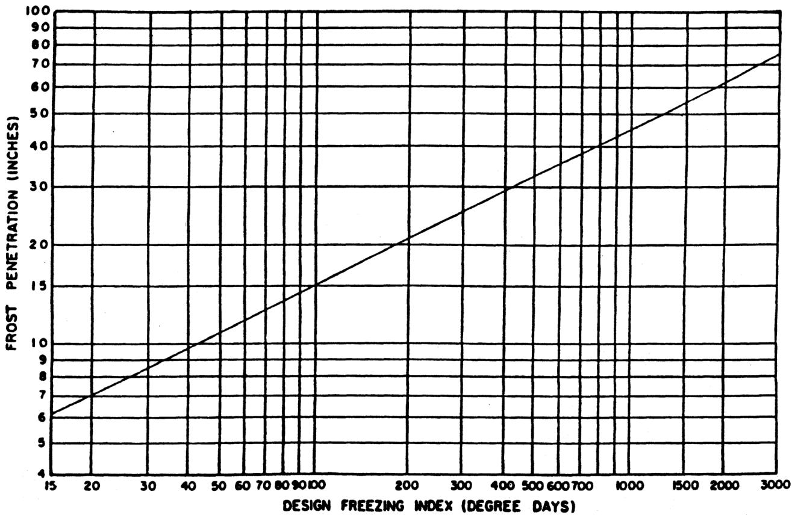

Pavement Structure
Pavement structures are engineered composite cross‑sections consisting of a prepared subgrade supporting successive subbase, base and surface courses whose combined strength must meet or exceed a required Design Structural Number derived from anticipated traffic loads and environmental conditions [1]. Their purpose is to provide a safe, durable platform for vehicular traffic while preventing premature distress such as settlement, frost‑heave, cracking, rutting and moisture‑related failure through strict control of layer thicknesses, compaction tolerances, permeability and drainage coefficients set to 1.0 for all layers [1][2]. By maintaining highly permeable aggregate layers that allow rapid gravity drainage, limiting vertical differentials across joints, and ensuring each course is compacted within prescribed limits, the structure achieves reliable load distribution, structural stability and long‑term service life with minimal maintenance [1][2].
PennDOT publications covering “Pavement Structure” also include the following subtopics: Base Course, Binder Course, Brick Pavement, Compaction, Geogrid, Geosynthetic, Geotextile, Lift, Shoulder, Subbase, Subgrade, and Wearing Course.
Sub-concepts (12)
Purpose and design objectives
Pavement structures are engineered to meet the fundamental problem of providing a safe and durable platform for vehicular traffic while preventing premature distress such as excessive settlement, frost‑induced heaving, cracking, rutting, and moisture‑related failure. To satisfy this need the design employs a composite cross‑section consisting of a prepared subgrade supporting successive subbase, base, and surface courses whose combined strength must meet or exceed a required Design Structural Number derived from anticipated traffic loads and environmental conditions. The required SN is achieved by selecting appropriate layer thicknesses that balance per‑inch material costs, observe prescribed minimum and maximum lift depths, apply structural coefficients, and use unit drainage factors set to 1.0 for all layers, ensuring the calculated SN exceeds the design value. In addition, each layer must be compacted so that its installed thickness does not fall more than one‑quarter inch below the design thickness, with compaction limited to four roller passes to preserve the free‑draining character and intended porosity of the aggregate. The subbase and base materials are required to be highly permeable so that gravity‑drainable water can be rapidly expelled, thereby minimizing capillary action and protecting the pavement from excess moisture that would otherwise degrade performance. Continuous drainage is provided through properly sloped cross‑sections, lateral and edge drains, and a unit drainage coefficient of 1.0, while geotextiles may be incorporated to enhance drainage, layer separation, erosion control, and sediment control. Where soft subgrades are encountered, geogrids can be used for reinforcement, and stress‑absorbing membranes (SAMs) or interlayers are permitted only on flexible pavements with flexible bases that have a surface free of excessive cracking, spaced no more than fifteen feet between thermal cracks, and covered by at least two courses of material as required by manufacturers. The surface course must remain highly permeable; test sections of at least 225 ft² are required to demonstrate an average infiltration rate greater than two hundred inches per hour, a void content of approximately twenty percent (± five percent), and a hardened density not exceeding one hundred thirty pounds per cubic foot (± five pounds). At transverse joints the structure must maintain continuity by using the prescribed load‑transfer method and limiting the finished vertical differential to no more than one‑quarter inch across any joint. Subgrade deficiencies must be corrected before subbase placement, and the subbase must achieve a non‑movement condition; if proof rolling shows instability or if the installed depth is short by half an inch or more, the subbase is deemed defective and must be removed and repaired. For lane‑widening projects the new pavement must match existing layer depths for partial widenings under ten feet, and for full‑width extensions of ten feet or more the same principle applies unless traffic loads differ, with drainage continuity verified throughout the cross‑section. By meeting these dimensional, compaction, load‑transfer, permeability, and drainage criteria the pavement structure addresses the performance need for reliable load distribution, structural stability, rapid storm‑water infiltration, and long‑term service life while minimizing maintenance and preserving safety. [1][2]
[1] — Ch. 2 (pp. 58–63), Ch. 5 (pp. 115–126), Ch. 6 (pp. 134–150), Ch. 8 (pp. 160–166), Ch. 9 (pp. 172–173); [2] — SECTION 100 GENERAL PROVISIONS (pp. 15–21), SECTION 300 BASE COURSES (pp. 231–232), SECTION 400 FLEXIBLE PAVEMENTS (pp. 309–310), SECTION 500—RIGID PAVEMENTS (pp. 419–447)
A pavement structure must first satisfy a functional requirement for effective drainage at the surface and beneath each layer, removing ponded runoff and subsurface moisture to preserve subgrade support and extend service life while maintaining uniform ride quality for safe travel [1][2]. The system also has to provide a stable base that supports imposed traffic loads without damaging the underlying subgrade, and where pervious surfaces are used it must permit water infiltration of at least two hundred inches per hour as demonstrated by ASTM testing on representative sections [1][2]. Layer thicknesses are selected to meet the structural requirement derived from anticipated traffic and environmental conditions, with reclaimed materials incorporated when appropriate, and the design limits CBR values to a maximum of twenty while requiring chief geotechnical approval for any value above ten [1]. Subbase placement must achieve minimum compacted depths of three inches for No. 2A aggregate and four inches for No. OGS aggregate, compacted to a non‑movement condition within one‑half inch of the design depth; any deficiency of a half‑inch or more renders the subbase defective [2]. Concrete slabs are cast with a sacrificial thickness of one‑quarter inch beyond the nominal design and may not be thinner than a quarter‑inch below the specified design thickness, each slab required to reach at least 4,925 psi compressive strength and 650 psi flexural strength before traffic is permitted [2]. Load‑transfer devices such as dowels and tie bars are required to be fully bonded along their embedded length, with dowel grout achieving a minimum of 2,500 psi and cementitious bedding grout reaching an initial 1,000 psi and increasing to 2,500 psi within twelve hours; the cement‑treated bedding depth may not exceed two inches while fine‑grained granular bedding is limited to one‑half inch [2][1]. Joint spacing is limited to thirty feet for JRCP or fifteen feet for JPCP, vertical differentials across joints are restricted to a quarter inch, and transverse joint gaps are limited to one‑quarter to one‑half inch with longitudinal gaps up to three‑quarters inch [1][2]. A Safety Edge with a thirty‑degree taper is installed on the outer edge of wearing or binder courses to a minimum depth of one‑and‑a‑half inches and not exceeding five inches, reducing edge stresses and improving rideability [1]. Durability is enhanced by using interlayer systems that act as moisture barriers, controlling moisture in the subbase, keeping the subbase well‑moistened during placement, avoiding over‑compaction that eliminates free drainage or crushes aggregate, and providing frost‑mitigation measures such as a stronger base course for freeze‑thaw susceptible subgrades [1][2]. For pervious concrete sections the void content must be maintained at twenty percent plus or minus five percent, hardened density not to exceed 130 lb/ft³ with a ±5 lb/ft³ tolerance, and placement must occur at ambient temperatures above fifty degrees Fahrenheit (or fifty‑five for curing) with no rain during finishing; curing sheets protect the surface for at least seven days before traffic [2]. Safety requirements also prohibit construction traffic on the subbase until structural layers are in place, require grout and bedding to achieve specified strengths before opening to traffic, and mandate smooth steel‑wheeled static rollers for compaction of pervious concrete to avoid damage [2][1]. Serviceability is achieved by delivering a uniform supporting platform that meets initial and terminal serviceability levels, maintaining surface tolerances, using thin Superpave overlays no thinner than one‑and‑a‑half inches where structural upgrade is not required, and providing leveling courses of at least one inch thickness to correct profile deficiencies [1][2]. The overall design therefore integrates these functional, structural, durability, safety and serviceability criteria to ensure long‑term performance while reducing maintenance needs and enhancing rider safety [1][2].
[1] — Ch. 2 (pp. 58–59), Ch. 4 (pp. 84–89), Ch. 5 (pp. 115–126), Ch. 6 (pp. 143–150), Ch. 8 (pp. 160–166); [2] — SECTION 300 BASE COURSES (pp. 231–232), SECTION 400 FLEXIBLE PAVEMENTS (pp. 309–310), SECTION 500—RIGID PAVEMENTS (pp. 419–447)
Scope and applicability
The Pavement Structure design approach is applicable to both flexible and rigid full‑depth pavements, including composite systems and concrete slab types such as precast and prestressed structures [1][2]. It may be employed for projects involving new construction, reconstruction, rehabilitation, or widening that satisfy specified length or functional criteria, notably sections longer than 500 ft on divided highways, 1 000 ft on undivided highways, or bridge‑approach pavings exceeding 1 000 ft in total [1]. For flexible pavements the design governs the selection and thickness of surface, base, subbase and subgrade layers, with the base commonly constructed from asphalt‑treated permeable base (ATPB) or cement‑treated permeable base (CTPB) when a flexible base is used, while aggregate‑cement or aggregate‑lime‑pozzolan bases may be designed by either the Specified Thickness Design or Optimized Thickness Design methods and must observe the minimum and maximum course depths prescribed in standard tables [1]. When a flexible pavement incorporates an experimental stress‑absorbing membrane (SAM/SAMI), the existing surface must be sound, free of excessive alligator cracking, and thermal cracks must be spaced no more than fifteen feet apart; at least two overlay courses are required over the membrane [1]. Geosynthetics may also be incorporated, with geotextiles serving drainage, layer separation, erosion or sediment control functions and geogrids used to reinforce soft subgrade soils or aggregate layers [1][2]. In lane‑addition projects a partial widening of less than ten feet must replicate the existing pavement structure by providing an equal depth of asphalt (or concrete where applicable) and preserving established drainage layers, while full‑width additions of ten feet or more follow the same matching principle unless the anticipated traffic loading differs, in which case the design should reflect the actual load while maintaining adequate drainage [1]. Rigid pavement designs are treated as layered systems consisting of subgrade, subbase, base and surface, with the surface typically jointed plain concrete (JPCP) or roller‑compacted concrete (RCC), and shoulders required to be tied concrete on Long‑Life Concrete Pavement routes and urban interstates; rural interstates may use tied shoulders with undowelled joints when work‑zone traffic is not anticipated, and corridors with average daily traffic below ten thousand may consider widened slabs with asphalt or RCC shoulders [1]. All rigid pavement projects must use materials specified in the applicable manufacturer list and conform to detailed specifications that call for epoxy‑coated tie bars, high‑performance dowel bars, cement‑treated or polyurethane bedding grout, and reinforcement steel, with bedding thickness limited to one‑half inch for fine‑grained granular bedding and up to two inches for cement‑treated bedding, and minimum compressive strengths required before traffic opening [2]. Subbase construction for flexible pavements requires a minimum compacted depth of three inches of No. 2A aggregate placed directly on the subgrade, overlain by a minimum four‑inch compacted layer of No. OGS aggregate; when granulated slag is used each layer must be limited to four inches, and lifts may not exceed eight inches compacted depth for other materials [2]. Geotextile protection is required beneath the subbase, traffic is prohibited on No. OGS subbases, and a Subbase Delivery Plan must be prepared whenever the total subbase quantity exceeds 1 500 tons, with protective measures mandated during winter exposure until the final pavement course is placed [2]. Projects that contain unusually thick composite pavements or elements that cannot be realistically replicated also require analysis using the AASHTOWare DARWin software, which evaluates both rigid and flexible alternatives; short sections not meeting these special conditions must at least satisfy minimum thickness criteria [1]. All layer drainage coefficients are set to 1.0 in the design calculations, and the determination of pavement thicknesses is constrained by the prescribed minimum and maximum values found in the standard tables [1].
[1] — Ch. 2 (pp. 62–63), Ch. 5 (p. 115), Ch. 6 (pp. 134–136), Ch. 8 (pp. 160–166), Ch. 9 (pp. 172–173); [2] — SECTION 300 BASE COURSES (pp. 231–232), SECTION 500—RIGID PAVEMENTS (pp. 436–438)
When the existing pavement cannot meet the prerequisites for stress‑absorbing membrane systems—specifically it is not a flexible pavement with a flexible base, exhibits excessive or alligator cracking, has thermal cracks spaced more than fifteen feet apart, or cannot accommodate the required overlay thickness and two courses of material—a conventional seal coat becomes the preferred alternative [1]. If a lane widening involves less than ten feet, the new asphalt layers must replicate the existing pavement structure in type, thickness, and drainage; for widenings of ten feet or greater the default remains to copy the old structure unless the anticipated traffic on the added lane differs markedly from that of the existing roadway, in which case design should be based on actual traffic loads, prompting a different structural approach [1]. When the pavement base is unstable or removal of material would degrade performance, thin overlays are inadequate and more extensive treatments such as milling, heater‑planing, or full reconstruction must be used; thin overlays are only acceptable when the surface is already asphalt, the pavement is structurally sound with less than two percent patching, drainage is satisfactory, and no structural upgrade is required [1]. For projects whose continuous length is under five hundred feet on divided highways or one thousand feet on undivided roads, the design may simply match the existing structure provided minimum thickness tables are met, but if the existing composite pavement greatly exceeds those minima or contains elements that are impractical to duplicate—such as crack‑and‑seat sections—a full DARWin analysis and an alternative structural design can be mandated [1]. PennDOT oversight projects further require evaluation of both rigid and flexible alternatives rather than reliance on a single conventional structure, and all new construction, reconstruction, and rehabilitation projects exceeding the length thresholds must undergo DARWin pavement design analysis [1]. When the subgrade exhibits isolated low‑CBR spots or extensive zones with markedly different soil types, a uniform pavement thickness is no longer optimal; designers should improve weak sections to bring their CBR up to project‑average values or divide the corridor into a limited number of subsections each designed with its own thickness, and significant uncertainty in laboratory CBR results triggers additional field testing before committing to one structural solution [1]. In frost‑prone areas where soils are highly susceptible to heave, removal and replacement of those soils—or provision of an insulating granular base—supersedes simply increasing pavement depth, and if the subgrade CBR is five or less and the project area exceeds roughly twenty‑five thousand square yards, subgrade strengthening methods such as cement or lime stabilization, rock capping, geogrids, or geotextiles become more cost‑effective than a conventional pavement structure [1]. On urban interstates or expressways where incident‑management activities are likely, the design must employ full‑depth plain cement concrete shoulders with dowelled transverse joints and tied concrete shoulders, making the standard flexible pavement approach unsuitable for the shoulder; for rural interstates without such demands, tied concrete shoulders with undowelled joints—or, when average daily traffic is below ten thousand, widened slabs with asphalt or roller‑compacted concrete shoulders—may be considered as alternatives [1]. The choice of thickness design method for a full‑depth flexible pavement is also limited by allowable lift depths and cost objectives; consequently only the Specified Thickness Design or Optimized Thickness Design procedures may be used, while the Layered Analysis method is prohibited and the design must remain within the minimum and maximum course depths specified in the reference tables, which can force a switch to one of the approved methods if those limits are reached [1]. Finally, pervious pavement mixtures cannot be placed when ambient or surface temperatures fall below fifty degrees Fahrenheit, requiring a conventional (non‑pervious) pavement design under such cold weather conditions [2].
[1] — Ch. 2 (pp. 62–63), Ch. 5 (pp. 115–120), Ch. 6 (pp. 134–150), Ch. 8 (pp. 165–166), Ch. 9 (pp. 172–173); [2] — SECTION 400 FLEXIBLE PAVEMENTS (pp. 309–310)
Design inputs and requirements
Designing a pavement structure begins with a detailed site characterization that confirms the type and condition of the existing surface; when the surface is asphalt it must be essentially intact, with patching limited to less than two percent of the area, and both surface and subsurface drainage either already satisfactory or slated for improvement. A recent pavement‑condition survey documenting current distress provides the baseline for assessing whether the existing layers can support the new structure. Traffic inputs require both present and projected loads: average daily traffic is taken from the appropriate ADT tables (e.g., Table 10.1/10.2), a reliable forecast of future loading is developed, and for rigid pavements the design traffic may be expressed as 18‑kip equivalent single axle loads (ESALs) over the initial performance period. Material information includes selecting the correct layer thicknesses and binder grades—such as Superpave mix thicknesses with a PG 64E‑22 binder for asphalt overlays—or, for Portland cement concrete slabs, specifying the 28‑day mean modulus of rupture, the 28‑day mean elastic modulus of the slab, and the effective k‑value of the subgrade. Representative sampling defines the number, size, depth, and handling requirements of each layer. Geotechnical data are obtained through in‑situ testing—Falling Weight Deflectometer, dynamic cone penetrometer, or lightweight deflectometer—to quantify subgrade stiffness and to calculate the effective k‑value used in structural analysis; reliability considerations are incorporated by assigning a reliability level and an overall standard deviation that capture uncertainty in traffic, material, and subgrade properties. Environmental and drainage factors are evaluated to identify wet subgrades or other water problems before construction, with the design incorporating a load‑transfer coefficient for structural continuity and an overall drainage coefficient that reflects the system’s capacity to shed water under local climate conditions. [1]
[1] — Ch. 5 (pp. 115–126), Ch. 8 (p. 160)
The overall design of pavement structures is required to follow the 1993 AASHTO Pavement Design Procedures for both flexible and rigid pavements as amended by the department, with all analyses performed using the department‑mandated AASHTOWare DARWin 3.01 software [1]. A full DARWin analysis becomes mandatory when the continuous paved length exceeds 500 feet on divided roadways, 1,000 feet on undivided roadways, or bridge approaches longer than 1,000 feet, and a new analysis is required if the design year used differs by more than three years from the approved version [1]. The software requires input of projected 18‑kip equivalent single axle loads, initial and terminal serviceability levels, concrete slab modulus of rupture and elastic modulus, mean effective subgrade k‑value, selected reliability level, overall standard deviation, load‑transfer coefficient (J) and drainage factor (Cd), which together drive material selection for each course from subgrade through surface layer [1]. The calculated Structural Number must exceed the prescribed design SN, and layer thicknesses are obtained by either the Specified Thickness or Optimized Thickness method; layered‑analysis designs are expressly prohibited, structural coefficients are taken from Table 9.3, drainage coefficients are fixed at 1.0, and permissible lift depths are limited to the minimum and maximum values listed in Tables 9.4 and 9.5 [1]. Material specifications for concrete patches follow Publication 408, requiring compliance with RC‑26M and Sections 516 or 519, while reconstruction of lanes longer than 500 feet with Portland cement concrete must adhere to RC‑21M for jointed reinforced concrete or RC‑27M for jointed plain concrete, with minimum compressive strength and cure time defined in Section 501 and standard PCC mix designs detailed in Section 704 [1]. In addition, rigid‑pavement materials are required to meet the thresholds set out in Section 106 and the AASHTO Mechanistic‑Empirical Pavement Design Guide, with concrete slabs achieving a minimum compressive strength of 4,925 psi and a flexural strength of 650 psi, and cement‑treated bedding mixes attaining at least 500 psi before traffic is permitted [2]. Reinforcement steel, dowel bars and longitudinal joint ties must be epoxy‑coated in accordance with ASTM A775, and grout used for dowels or tie bars must develop a compressive strength of no less than 2,500 psi prior to opening the slabs to traffic [2]. Joint geometry is tightly controlled; transverse joints may not be narrower than one‑quarter inch nor wider than one‑half inch, longitudinal joints are limited to three‑quarters inch, vertical differentials across any joint cannot exceed one‑quarter inch, and a sacrificial thickness of one‑quarter inch above the nominal design thickness is required, while for concrete reconstruction projects the joint spacing requirements of 30 feet for reinforced concrete or 15 feet for plain concrete with coated dowel bars and proper seals are also prescribed [1][2]. Asphalt widening projects must replicate existing layer thicknesses, with partial lane widenings under ten feet matching the existing asphalt or concrete depth and full‑width additions of ten feet or more also matching unless traffic loading dictates a different design, and drainage throughout the cross‑section must be verified [1]. Overlay designs require a leveling course of at least one inch, a Superpave wearing‑course thickness of no less than 1½ inches on Interstates without PDAU approval, use of PG 64E‑22 binder for 6.3 mm wearing courses, and compliance with the dimensional limits in the applicable tables [1]. Safety edges are required on all pavement edges with a depth between 1½ inches and five inches [1]. Drainage design follows Publication 72M Roadway Construction Standards and Publication 13M Design Manual Part 2, requiring protection of outlets within mowable areas by headwalls, base‑drain sizing and outlet spacing per Chapter 10 Section 10.3.D, and continuous edge drains as shown on RC‑30M; base and subbase materials shall be highly permeable to permit rapid gravity drainage and subbase slopes should be maximized [1]. Subgrade stiffness is verified by Falling Weight Deflectometer testing, while moisture conditions are confirmed with dynamic cone penetrometer and lightweight deflectometer tests as detailed in Appendix J, and any California Bearing Ratio value above ten must receive approval from the Chief Geotechnical Engineer, with values exceeding twenty prohibited for use in the Heukelom‑Klomp correlation [1]. The resilient modulus of the roadbed soil must meet the minimum level documented on the plans, frost‑susceptible subgrades are treated according to the 1993 AASHTO guide and departmental frost design procedures, and geosynthetics, when employed, follow Publication 408, FHWA Geosynthetic Design and Construction Guidelines, NTPEP data and manufacturer product data, with geogrids and geotextiles specified in Sections 221, 738 and related references [1]. Experimental pavement systems such as SAM or SAMI must be processed through the BOCM Materials Division New Products and Innovations Section and obtain FHWA sign‑off for federally overseen projects; they may only be used on flexible pavements with flexible bases, thermal cracks in the existing surface must be spaced no more than fifteen feet apart, and at least two courses over the membrane must satisfy manufacturer depth recommendations [1]. For pervious pavement layers, performance criteria include an average infiltration rate exceeding two hundred inches per hour, a void content of 20 % ± 5 %, a hardened density not greater than 130 lb/ft³ with a tolerance of ±5 lb/ft³, and a compacted thickness no more than one‑quarter inch below the design thickness; infiltration testing must follow ASTM C1701, placement temperatures must be at least fifty degrees Fahrenheit for pervious asphalt (forty degrees for pervious concrete), compaction is limited to smooth steel‑wheeled rollers with no more than four passes, and no tack coat may be placed between lifts, while any emulsified asphalt coating must conform to AASHTO specifications such as SS‑1 or CSS‑1 [2]. Concrete mixes, hauling, curing and joint procedures for pervious and conventional concrete follow ASTM C1688 and PTM No. 1 core testing, require a minimum seven‑day cure at ambient temperatures above fifty‑five degrees Fahrenheit before traffic is allowed, and placement must be halted if rain is forecast within the finishing period [2]. Subbase construction requires that when the quantity exceeds 1,500 tons the contractor submit a Subbase Delivery Plan for review prior to work, aggregate layers are placed at minimum compacted depths of three inches for No. 2A material and four inches for No. OGS material with each lift not exceeding eight inches in depth (four inches when granulated slag is used), compaction must achieve the non‑movement condition defined in Section 206.3(b), final subbase elevations must be within one‑half inch of the design elevation, traffic on OGS subbase is prohibited, and exposure beyond sixty days mandates retesting for surface irregularities [2]. Subgrade preparation shall follow Section 210, preserving permeability by avoiding heavy‑equipment traffic prior to geotextile placement and receiving acceptance inspection before any base courses are installed [2]. Additional project constraints include cost‑benefit considerations that balance drainage provision against long‑term maintenance, timing windows that require design approval before final design meetings or contract award, and the length thresholds that trigger mandatory DARWin analyses [1].
[1] — Ch. 2 (pp. 58–63), Ch. 4 (pp. 84–89), Ch. 5 (pp. 115–126), Ch. 6 (pp. 134–150), Ch. 8 (pp. 160–166), Ch. 9 (pp. 172–173); [2] — SECTION 300 BASE COURSES (pp. 231–232), SECTION 400 FLEXIBLE PAVEMENTS (pp. 309–310), SECTION 500—RIGID PAVEMENTS (pp. 419–447)
Design methods and criteria
The design of a pavement structure proceeds through a sequence of interrelated procedures that begin with an assessment of existing conditions and culminate in the selection of layer thicknesses that satisfy structural, drainage, and economic criteria. A condition survey conducted in accordance with state manuals is followed by in‑situ stiffness testing—such as Falling Weight Deflectometer (FWD), dynamic cone penetrometer (DCP) or lightweight deflectometer (LWD)—to obtain resilient modulus values for the subgrade and existing base layers. Where geotechnical data are not yet available, a preliminary design may be generated by assuming reasonable resilient‑modulus values for the subgrade and base. For projects whose continuous pavement length exceeds 500 ft on divided highways or 1,000 ft on undivided routes, analysis is required with AASHTOWare DARWin® 3.01 in accordance with the 1993 AASHTO Pavement Design Procedures. The DARWin analysis can employ either the Specified Thickness or Optimized Thickness design methods (excluding the Layered Analysis option) to convert a required Design Structural Number into individual layer thicknesses using the equation SN = Σ aᵢ dᵢ mᵢ, where structural coefficients aᵢ are taken from standard tables and all drainage coefficients mᵢ are set to 1.0; minimum and maximum course depths are observed as prescribed and per‑inch material costs are incorporated so that the configuration with the lowest total pavement cost is selected. Subgrade strength is expressed through California Bearing Ratio (CBR) values that feed the Heukelom‑Klomp correlation for resilient modulus, using a factor of 1,500 unless low in‑situ density warrants a reduced factor of 1,000, and CBR inputs are limited to a maximum of twenty. Resilient modulus may also be back‑calculated from FWD data by applying a correction factor of 0.25 and halving the dynamic modulus to obtain a static value. Frost‑susceptible soils are treated with the AASHTO frost‑heave procedure and an online Frost Heave Calculator, while subgrade strengthening options such as rock capping or lime/cement stabilization are modeled with a structural coefficient of 0.12 and a CBR of 20. Drainage design follows basic principles that emphasize gravity removal of free water, control of capillary moisture, lowering intersecting water tables, intercepting seepage from cuts, protecting drain outlets, and installing lateral underdrains in wet subgrade or cut‑to‑fill transitions; permeability is evaluated empirically using material gradation as an indicator, and base drain sizing and outlet spacing are determined according to the method outlined in Publication 13M Chapter 10 Section 10.3.D with overall edge and lateral drain layout complying with Publication 72M. For overlay projects a pre‑overlay surface preparation may include a scratch or a minimum one‑inch leveling course to provide a uniform working platform and correct profile irregularities, and the structural contribution of any leveling course is incorporated into the pavement calculations; safety edge detail is specified as a standard edge treatment on wearing or binder courses of at least 1½ inches depth. Concrete shoulder design adheres to procedural rules tied to corridor type and traffic volume: urban interstates and expressways require full‑depth plain cement concrete shoulders with dowelled transverse joints, while rural routes may employ tied shoulders with undowelled joints or widened slabs with asphalt or RCC shoulders when the two‑way average daily traffic is below 10,000; all full‑depth concrete shoulders must match the material gradation of the mainline pavement from subgrade to surface. For precast concrete pavements the manufacturer must be qualified by having its PCPS system listed in Bulletin 15 and must submit mix designs that demonstrate a minimum compressive strength of 4,925 psi and a flexural strength of 650 psi, with thermal‑expansion coefficients taken from the AASHTO Mechanistic‑Empirical Pavement Design Guide. Shop and working drawings are required to detail slab dimensions, reinforcement layout, dowel and tie‑bar locations, sacrificial thickness, surface texture, grout ports, lifting devices and any foam gaskets. An installation plan then specifies surveying, subbase preparation, bedding grading with laser‑controlled screeds, setting‑bolt or polyurethane leveling, and the placement of load‑transfer dowels and grout so that joint gaps and vertical differentials remain within prescribed limits; slabs are cast one‑quarter inch thicker than the nominal design thickness and grout must achieve at least 2,500 psi before traffic opening. Prior to full construction two test sections each covering a minimum area of 225 ft² are constructed using the approved joint‑mix formula; their infiltration rate is measured in accordance with ASTM C1701 and must average more than 200 in/hr, while compacted thickness may not fall more than one‑quarter inch below the design thickness. Void content is verified by ASTM C1754 to lie within 20 % ± 5 %, hardened density determined by the same standard must not exceed 130 lb/ft³ and must be within ±5 lb/ft³ of the target value, and unit‑weight testing of each truck load is performed per ASTM C1688; core samples are taken for density and void verification and periodic infiltration tests are conducted on the installed pavement. Subgrade preparation requires excavation to undisturbed soil without compaction, scarifying at least six inches where fine material has accumulated, and prohibiting heavy‑equipment traffic until geotextile and stone bedding are placed; detention basins receive a minimum two‑inch layer of fine aggregate wrapped in non‑woven geotextile followed by coarse aggregate placed in lifts no greater than eight inches and compacted as specified. Pervious asphalt mixtures may only be placed when air or surface temperature exceeds 50 °F; they are rolled with smooth steel‑wheeled rollers for up to four static passes, limiting compaction to preserve drainage, and spreading is carried out with a track paver in lifts not exceeding four inches, the screed being adjusted to meet design grades and the mix allowed to cool to 100 °F before subsequent layers are placed. Overall acceptance of the pavement structure rests on meeting these procedural thresholds—strengths, thickness tolerances, infiltration rates, void percentages, density limits, temperature constraints, and material‑specific specifications—rather than on any single analytical equation; the process is guided by the AASHTO mechanistic‑empirical design guide for material properties and ASTM standards C1701, C1754 and C1688 for testing. Finally, once structural layer thicknesses are established, a life‑cycle cost analysis is performed to select the most economical configuration, completing the procedural framework for pavement structure design. [1][2]
The following figure provides a design chart for determining frost penetration.

A nomograph with a logarithmic x-axis and a semi-logarithmic y-axis. The horizontal axis represents the Design Freezing Index in Degree Days, ranging from 15 to 3000. The vertical axis represents Frost Penetration in Inches, ranging from 4 to 100.
A single diagonal line indicates that frost penetration increases as the freezing index increases.
Text description of this figure
A nomograph with a logarithmic x-axis and a semi-logarithmic y-axis. The horizontal axis represents the Design Freezing Index in Degree Days, ranging from 15 to 3000. The vertical axis represents Frost Penetration in Inches, ranging from 4 to 100.
A single diagonal line indicates that frost penetration increases as the freezing index increases.
The figure displays a log-log plot relating the design freezing index to frost penetration depth, showing that as the number of degree days increases, the resulting frost penetration in inches also increases.
[1] — Ch. 2 (pp. 58–59), Ch. 5 (pp. 115–126), Ch. 6 (pp. 134–150), Ch. 8 (pp. 160–166), Ch. 9 (pp. 172–173); [2] — SECTION 400 FLEXIBLE PAVEMENTS (pp. 309–310), SECTION 500—RIGID PAVEMENTS (pp. 419–447)
The pavement structure must be designed in accordance with the 1993 AASHTO Pavement Design Procedures as amended by PennDOT, employing the mandated AASHTOWare DARWin 3.01 software. Any new construction, reconstruction or rehabilitation project whose continuous paved length exceeds 500 ft on divided roadways or 1,000 ft on undivided roadways requires a full DARWin analysis, and if the design year used for approval differs from the actual construction year by more than three years a new design and life‑cycle cost analysis must be performed. The design assumes a uniform, stable subgrade; CBR values above ten must receive approval from the Chief Geotechnical Engineer, no CBR may exceed twenty in the Heukelom‑Klomp correlation (limiting the allowable resilient modulus to 30 000 psi), and back‑calculated resilient moduli greater than 15 000 psi must be confirmed by additional testing. Frost‑susceptible soils must be removed or insulated, and subgrade strengthening is required when CBR falls below five.
A well‑drained aggregate subbase is placed on the prepared subgrade to provide drainage and a supportive platform for overlying layers. Base and subbase materials shall be highly permeable so that gravity can rapidly remove free water; the slope of subbase layers should be maximized, and base drains sized and spaced per Publication 13M with outlets protected from crushing or plugging. Lateral underdrains are mandated at wet subgrade areas, cut‑to‑fill transitions, and where intersecting water tables occur, with side seepage intercepted to create sufficient safety margins against moisture‑induced distress.
For flexible pavements, stress‑absorbing membranes (SAM) or membrane interlayers (SAMI) may be incorporated only when the existing surface is free of excessive cracking or extensive alligator cracking and when thermal cracks are spaced no more than fifteen feet apart. The SAMI must be placed directly on the pavement and covered by at least two overlay courses that satisfy the manufacturer’s depth recommendations. When geosynthetics are used for structural reinforcement, their design parameters are developed individually in accordance with FHWA guidelines, NTPEP data and the manufacturer’s specifications.
Rigid concrete pavements are governed by joint spacing and load‑transfer requirements: reinforced slabs shall employ thirty‑foot transverse joints with coated dowel bars fully bonded along their embedded length, while plain concrete may use fifteen‑foot spacing. Longitudinal tie bars are required for patches longer than sixty‑five feet, slab thickness may not be reduced below eight inches even when prestressed, and any reconstruction exceeding roughly five hundred feet obliges a complete pavement design analysis to verify adequate slab depth. Accelerated concrete must achieve the minimum compressive strength within four to seven hours before traffic is permitted; high‑early‑strength mixes are prohibited because of shrinkage‑cracking risk.
When widening an existing asphalt pavement, partial lane additions narrower than ten feet must replicate the existing layer depths and concrete thicknesses while preserving drainage continuity; full‑width additions of ten feet or more follow the same matching principle unless the new lane is expected to carry significantly different traffic loads, in which case design shall be based on the anticipated traffic. Any alteration of layer thicknesses must be checked to ensure adequate cross‑sectional drainage.
Overlay design imposes minimum thickness limits: Superpave Wearing Course overlays shall not be placed thinner than one and a half inches unless special approval is obtained. Thin overlays are permissible only when the existing surface is asphalt, the underlying pavement is structurally sound (no more than about two percent requires patching), and both surface and subsurface drainage are adequate or will be upgraded; all overlays must conform to the depth limits in the design tables.
Jointed plain concrete pavements require tied concrete shoulders; on high‑volume urban interstates and expressways full‑depth cement concrete shoulders with dowelled transverse joints, as shown in Publication 72M, are mandatory. On rural routes with two‑way ADT below ten thousand, tied shoulders may be undowelled or widened slabs supported by asphalt or reinforced cement concrete shoulders. Wherever a full‑depth concrete shoulder is used, the material composition from subgrade through surface must match that of the mainline pavement and conform to Publication 408.
Structural adequacy is quantified by the Structural Number; the calculated SN derived from the chosen layer thicknesses must exceed the required Design SN, providing an inherent factor of safety. Thickness selection may be performed using either the Specified Thickness or Optimized Thickness method available in DARWin, applying the structural coefficients listed in Table 9.3 and assigning a drainage coefficient of 1.0 to every layer. All proposed layer depths are constrained by the minimum and maximum lift limits set out in Tables 9.4 and 9.5. Cost factors for surface, base and sub‑base materials are evaluated so that total pavement cost is minimized while still meeting these structural, material and reliability constraints, thereby ensuring a reliable and economical pavement system.
The pavement structure must satisfy a comprehensive set of performance and construction criteria that together ensure safety, durability and reliability. The concrete slabs are required to attain a minimum compressive strength of 4,925 psi and a flexural strength of 650 psi, and each slab is fabricated one‑quarter inch thicker than the nominal design to provide sacrificial material. Joint geometry is limited so that transverse gaps range from one‑quarter to one‑half inch, longitudinal gaps do not exceed three‑quarters inch, and vertical differential across any joint is restricted to a quarter inch (allowable up to half inch only before corrective grinding). Placement of dowels, tie bars and their slots must be within plus or minus one‑eighth inch of the drawing locations, and all bedding and dowel grouts must reach at least 2,500 psi before traffic is permitted. The subgrade must be properly prepared, and when more than 1,500 tons of subbase material are required a Subbase Delivery Plan must be approved. Aggregate layers designated No. 2A are compacted to a minimum depth of three inches, while No. OGS layers require at least four inches; no individual layer may exceed eight inches in compacted depth, reduced to four inches when granulated slag is used (with a possible six‑inch exception). Compaction must achieve the non‑movement condition and the final subbase elevation must be within one‑half inch of the design level; any deficiency greater than that triggers scarification, refilling and recompaction. Traffic on No. OGS subbase is prohibited, and if a No. 2A subbase serves as a haul road or remains exposed for more than sixty days it must be retested before overlying pavement placement. Proof rolling is required prior to installing flexible or rigid pavement when winter exposure has occurred. For pervious concrete sections the average infiltration rate must exceed two hundred inches per hour, and the compacted thickness may not be more than a quarter‑inch less than the design thickness. Installation is prohibited when ambient or surface temperatures are below fifty degrees Fahrenheit, and compaction is limited to four passes with smooth steel‑wheeled rollers; pneumatic‑tire rollers are excluded to preserve porosity. All materials must be sourced from manufacturers listed in Bulletin 15 and comply with Section 106. Reinforcement steel, dowel bars and joint ties are required to be epoxy‑coated in accordance with ASTM A775, and mechanical couplers must develop at least 125 percent of the specified yield strength of the reinforcement. Fine‑grained granular bedding may not exceed one‑half inch in thickness, while cement‑treated bedding is limited to two inches and must achieve a compressive strength of five hundred psi before traffic opening. Dowel grout must reach a minimum of 2,500 psi prior to traffic, and cementitious bedding grout must be at least 1,000 psi before opening and rise to 2,500 psi within twelve hours. Trial batches are to be mixed under identical temperature and time conditions at least twenty‑eight days before slab installation, with independent laboratory results submitted for review. The finished pavement may not be more than a quarter‑inch thinner than the design thickness, must exhibit a void content of approximately twenty percent plus or minus five percent, and its hardened density must lie within five pounds per cubic foot of the test‑section average while never exceeding one hundred thirty pounds per cubic foot. Concrete placement is allowed only when air temperature exceeds forty degrees Fahrenheit and no rain is forecast for twenty‑four hours after placement; the concrete must then cure for a minimum of seven days with ambient temperatures remaining above fifty‑five degrees before traffic is permitted. [1][2]
[1] — Ch. 2 (pp. 58–63), Ch. 4 (pp. 84–89), Ch. 5 (pp. 115–120), Ch. 6 (pp. 134–150), Ch. 8 (pp. 160–166), Ch. 9 (pp. 172–173); [2] — SECTION 300 BASE COURSES (pp. 231–232), SECTION 400 FLEXIBLE PAVEMENTS (pp. 309–310), SECTION 500—RIGID PAVEMENTS (pp. 419–447)
Structural section and dimensions
Pavement structure design includes specific dimensional criteria for the concrete slab that forms the riding surface. Joint spacing for reconstructed PCC lanes follows either thirty‑foot spacing for jointed reinforced concrete pavement or fifteen‑foot spacing for jointed plain concrete pavement, with an intermediate joint required when existing spacing exceeds roughly twenty feet. Slab widths are limited to a single lane and lengths must be at least six feet but not exceed fifteen feet (up to twenty feet for prestressed units), with a minimum structural thickness of eight inches and the as‑delivered elevation set about one‑quarter inch higher than the surrounding pavement. Tie bars or tie bolts are specified only for patches longer than sixty‑five feet, while any patch—including those using flexible‑base substitution—must be at least six feet long. The subbase is constructed in compacted layers not exceeding eight inches in thickness, reduced to four inches per layer when granulated slag is used, and each No. 2A aggregate course must achieve a minimum compacted depth of three inches while each No. OGS aggregate course must reach at least four inches; for rigid pavements and shoulders the sequence begins with a three‑inch No. 2A layer placed directly on the subgrade followed by a four‑inch No. OGS layer, and the finished subbase depth must be within one‑half inch of the design target. The guides do not prescribe explicit dimensional requirements for a separate base course beyond the subbase specifications. No specific thickness or extent is detailed for treated‑soil layers. Reinforcement details are limited to shop drawings without stated dimensional criteria, and edge‑support dimensions are likewise not defined in the referenced guidance. [1][2]
[1] — Ch. 4 (pp. 84–89); [2] — SECTION 300 BASE COURSES (pp. 231–232)
The pavement structure is defined by casting each precast slab ¼ inch thicker than the nominal design thickness and limiting slab lengths to a maximum of 15 ft (20 ft when prestressed) with widths set by the longitudinal joint layout on the shop drawings; transverse joints are spaced so that their opening is between ¼ inch and ½ inch and longitudinal joints may not exceed ¾ inch. The bedding material is fine‑graded with a laser‑controlled screed to achieve the required cross‑slope and grade within ±½ inch, and any vertical drop greater than 2 inches at a slab‑to‑existing‑pavement transition must be bridged with a temporary asphalt wedge. Tie bars are installed along longitudinal joints for continuous sections longer than 65 ft as shown on the shop drawings to provide load transfer, while joint widths and slab tolerances are controlled during placement to meet design criteria. [2]
[2] — SECTION 500—RIGID PAVEMENTS (pp. 438–447)
Materials and mixture design
The pavement structure specification must identify every constituent layer and the exact material that will form it, including subgrade, subbase, base, and surface layers [1][2]. The subgrade shall be a uniform, stable earth, while the subbase shall consist of a granular aggregate layer such as No. 2A coarse aggregate compacted in lifts of at least three inches, or No. OGS aggregate compacted in lifts of at least four inches and limited to eight‑inch maximum lift thickness (four inches when granulated slag is present) [1][2]. The base layer is normally built from either an asphalt‑treated permeable base, a cement‑treated permeable base, or alternatively an aggregate‑cement or aggregate‑lime‑pozzolan mix, each to be included as alternative materials in the project bid [1]. For rigid concrete surfaces the mix shall achieve a minimum 28‑day compressive strength of 4,925 psi and a flexural strength of at least 650 psi, be cast a quarter inch thicker than the nominal design thickness, incorporate the standard thermal‑expansion coefficient values prescribed by the AASHTO mechanistic‑empirical guide, exclude high‑early‑strength mixes because of excessive shrinkage, and satisfy the minimum strength and opening‑to‑traffic time limits set in Publication 408 §501 for accelerated concrete [1][2]. When a pervious concrete slab is specified, the hardened mix shall contain approximately twenty percent voids (± 5 %), have a bulk density not greater than 130 lb/ft³ (± 5 lb/ft³), and demonstrate an infiltration capacity exceeding two hundred inches per hour as measured by ASTM C1701; its thickness may be no more than one‑quarter inch thinner than the design thickness, and placement must occur within ninety minutes after final water addition while the subgrade remains saturated but free of standing water [2]. For flexible asphalt overlays the specification shall name the Superpave mix design, permitting nominal aggregate sizes of 25.0 mm, 19.0 mm, 12.5 mm and 9.5 mm, requiring a PG 64E‑22 binder for standard 6.3 mm wearing courses while prohibiting its use in 9.5 mm fine‑graded courses, and mandating a minimum one‑inch leveling course topped by a wearing course of at least one‑and‑half inches thickness [1]. Where load transfer is required, dowel bars shall be bonded along their full embedded length using epoxy, polyester or vinylester binders, and all joint reinforcement elements must conform to ASTM A775 and be designed for 125 % of the steel yield strength [1][2]. All bedding and dowel grouts placed beneath concrete slabs must attain a compressive strength of at least 2,500 psi prior to traffic loading, while cement‑treated bedding material shall achieve a minimum of 500 psi at the time of opening [2]. A minimum of two inches of fine aggregate shall be placed beneath any detention base, followed by coarse aggregate installed in lifts not exceeding eight inches in thickness [2]. When geotextiles are incorporated, their design parameters for drainage, separation or reinforcement shall be defined in accordance with Publication 408, FHWA Geosynthetic Design Guidelines, NTPEP data and the manufacturer’s product information [1]. If reclaimed material is stabilized, the specification shall identify the chosen mechanism—mechanical stabilization by adding sufficient imported granular material to achieve the target gradation and structural capacity, or chemical stabilization using cement, lime, fly ash or similar additives with type and dosage established through laboratory‑based mix designs that balance strength gain against brittleness, and must document the reclaimed material’s strength potential, aggregate gradation and stiffness [1]. For design calculations each layer shall be assigned a drainage coefficient of 1.0 and a structural coefficient obtained from the appropriate table, while layer thicknesses must comply with the minimum and maximum lift depths prescribed in the relevant tables [1]. In widening projects the newly placed asphalt layers shall be installed to the same depth as the existing pavement, new concrete layers shall match the existing slab thickness, and drainage layers shall be kept consistent with those already in place unless traffic loading justifies a different design [1]. Stress‑absorbing membrane interlayers may be used only on flexible pavements that have flexible bases, provided the existing surface does not display excessive cracking and thermal crack spacing does not exceed fifteen feet; the SAMI is placed directly on the pavement and must be covered by a minimum of two overlying courses whose combined depth satisfies the manufacturer’s recommendation [1]. The key material properties required for a concrete slab in the 1993 AASHTO rigid‑pavement design procedure include the 28‑day mean modulus of rupture, the 28‑day elastic modulus, the effective subgrade k‑value, and performance coefficients such as the load‑transfer coefficient J and drainage coefficient Cd [1].
[1] — Ch. 2 (pp. 62–63), Ch. 4 (pp. 84–89), Ch. 5 (pp. 115–126), Ch. 8 (p. 160), Ch. 9 (pp. 172–173); [2] — SECTION 300 BASE COURSES (pp. 231–232), SECTION 400 FLEXIBLE PAVEMENTS (pp. 309–310), SECTION 500—RIGID PAVEMENTS (pp. 419–447)
The selection and proportioning of pavement‑structure materials begins with a comprehensive assessment of traffic loads, existing pavement condition, subgrade strength, and drainage capability, which together define the required layer thicknesses and indicate whether mechanical or chemical stabilization is needed [1][2]. Laboratory‑tested mix designs are then used to determine the type and amount of additives that will provide sufficient strength while avoiding excessive brittleness; the appropriate stabilizer content is established through testing because too much can make the material brittle, whereas insufficient amounts fail to meet structural demands [1][2]. For base and subbase layers, high permeability is essential so that water drains by gravity and capillary rise is prevented, a property evaluated through particle‑size gradation, although limited zones may intentionally reduce permeability to create a more stable work platform during construction [1][2]. Subbase mixes are prepared with enough moisture to prevent segregation during stockpiling, hauling, and placement, and each lift is limited to eight inches of compacted depth (four inches when granulated slag is used), while individual aggregate layers must reach minimum compacted depths of three inches for No. 2A material and four inches for No. OGS material, with compaction to the non‑movement condition ensuring durability [2]. Concrete pavements follow the standard Portland cement concrete mix specified in Publication 408 Section 704 with an optimized aggregate gradation, delivering traffic‑opening strength within twenty‑four to forty‑eight hours; high‑early‑strength mixes are avoided because of shrinkage and cracking potential, while accelerated concrete capable of opening to traffic in four to seven hours is reserved for situations requiring rapid restoration [1][2]. All rigid concrete mix designs must include trial‑batch data demonstrating achievement of a minimum compressive strength of 4,925 psi and a flexural strength of 650 psi, incorporate a sacrificial quarter‑inch thickness for construction protection, and be fabricated according to approved shop drawings that detail surface texture, dowel‑bar provisions, tie‑bars, and grout mixes [2]. In pervious‑concrete applications the mix must produce a void content of about twenty percent plus or minus five percent, a hardened density not exceeding 130 lb/ft³ within ±5 lb/ft³, and an infiltration rate greater than two hundred inches per hour, with test sections at least 225 ft² placed no more than one‑quarter inch thinner than the design thickness to verify these criteria [2]. Asphalt overlays are selected based on the condition of the existing surface, adequate drainage, and the need for structural reinforcement; on interstate facilities the Superpave wearing course cannot be less than one‑and‑a‑half inches thick without special approval, aggregate size is taken from prescribed tables to meet the required structural coefficient, a PG 64E‑22 binder is mandated for 6.3 mm mixes but prohibited for 9.5 mm fine‑grade versions, and an interlayer such as geotextile fabric or fiberglass grid may be incorporated when reflective cracking, moisture intrusion, or other distress mechanisms are anticipated, with a minimum one‑inch leveling or scratch course permissible to provide a uniform platform that can count toward structural thickness [1]. When widening existing pavements, new sections must mirror the original structure: partial widenings under ten feet use identical layer depths for asphalt or concrete, and drainage layers should remain consistent; full‑width additions of ten feet or more follow the same rule unless traffic conditions differ significantly, in which case thicknesses appropriate to the actual loads are adopted while still ensuring adequate drainage throughout the cross‑section [1]. Concrete shoulders are designed to meet edge‑stress reduction, durability, constructability, and performance goals; urban interstate projects require full‑depth tied concrete shoulders with dowelled transverse joints, whereas rural interstates may use non‑dowelled ties unless traffic volumes or incident‑management needs dictate otherwise, and low‑volume corridors may be served by widened slabs with asphalt or roller‑compacted concrete shoulders, all of which must match the mainline pavement materials from subgrade to surface in accordance with Publication 408 [1]. Bedding layers are proportioned within strict thickness limits—no more than one‑half inch for fine‑grained granular bedding and two inches for cement‑treated bedding—and must achieve at least 500 psi compressive strength before traffic is allowed, while dowel‑slot grout must be pumpable, attain a minimum of 1,000 psi prior to opening, and reach 2,500 psi within twelve hours, with laboratory verification using methods such as AASHTO T106 or PTM 521 [2]. All reinforcement steel, dowel bars, and joint ties are epoxy‑coated per ASTM A775 to provide the durability required for long‑term performance, and the combined emphasis on drainage efficiency, structural capacity, resistance to cracking, construction practicality, and anticipated traffic impacts ensures that the selected materials and mixture proportions satisfy the overall performance objectives of the pavement system [1][2].
[1] — Ch. 2 (pp. 58–59), Ch. 4 (pp. 84–89), Ch. 5 (pp. 115–126), Ch. 8 (pp. 165–166); [2] — SECTION 300 BASE COURSES (pp. 231–232), SECTION 500—RIGID PAVEMENTS (pp. 419–447)
Structural details and interfaces
A pavement structure must incorporate a system of longitudinal and transverse joints whose locations are defined by design drawings, thermal‑expansion analysis, and the need to limit crack spacing; for flexible pavements stress‑absorbing membranes are placed over full‑width sections across both joint directions and random cracks with thermal‑crack spacing not exceeding fifteen feet, while pervious concrete slabs require longitudinal gaps no larger than three‑quarters of an inch and transverse gaps between one‑quarter and one‑half inch along their entire length [1][2]. Joint creation methods differ by pavement type: flexible pavements use full‑width membranes over existing joints, whereas pervious concrete construction joints may be formed by tooling into the slab to a depth of roughly one‑quarter of the slab thickness immediately after finishing or by saw‑cutting once sufficient compressive strength is achieved, with saw cuts vacuumed to remove fines that could clog the surface [1][2]. All exterior formed edges are rounded with a minimum radius of one‑quarter inch and safety‑edge treatments—30° tapered ribs applied to the outside of the wearing or binder course—must be at least one and a half inches deep but not exceed five inches, providing an edge transition that also serves as a structural detail [1][2]. Full‑depth concrete patches and new concrete slabs require load‑transfer devices in every transverse joint; coated dowel bars bonded along their entire embedded length with epoxy, polyester or vinylester binders are the most common, and for pervious concrete high‑performance dowels and epoxy‑coated tie bars serve the same function, each installed in slots that are subsequently filled with grout capable of reaching at least 2,500 psi before traffic is permitted [1][2]. Joint spacing is governed by pavement type: jointed reinforced concrete pavement calls for thirty‑foot perpendicular joints, jointed plain concrete pavement uses fifteen‑foot spacing, and pervious slabs longer than sixty‑five feet require additional longitudinal tie bars; when a patch exceeds sixty‑five feet in length, longitudinal tie bars or tie bolts are also required, and reconstruction of a single lane longer than five hundred feet must align new joints with existing ones, inserting an intermediate joint if the existing spacing is greater than twenty feet [1][2]. Load transfer across joints may be expressed for rigid pavements by a load‑transfer coefficient (J), while pervious concrete slabs achieve transfer through dowels, tie bars, and narrow‑mouth surface slots; at least four grout ports per slab are provided to ensure proper filling of the grout surrounding reinforcement [1][2]. Reinforcement of pavement layers can be achieved with geogrids placed at the subgrade‑aggregate interface to stabilize weak subgrades and Class 4 geotextiles used to separate subgrade from subbase, provide drainage, erosion control, or sediment control; in overlay applications reinforcement may consist of needle‑punched geotextile fabric that becomes saturated in the asphalt matrix, high‑strength fiberglass mesh grids that embed into the new overlay for tensile and torsional strength, or composite reinforcing grids combining moisture‑barrier fabric with embedded glass filaments [1][2]. Additional reinforcement details include cast‑in‑place dowel bars and tie bars placed in slots cut to tolerances shown on shop drawings, typically within ±⅛ inch of specified locations, all coated with a bond‑breaker material where embedded and receiving an epoxy coating that complies with ASTM A775; splices between reinforcement elements must employ listed rebar coupling devices developing at least 125 % of the specified yield strength [2][1]. Transition provisions include granular transition material where a new pavement abuts an existing section of different total depth, expansion joints sized according to ambient temperature coefficients, and any vertical drop greater than two inches between new slabs and existing pavement must be bridged with a temporary asphalt wedge or a Superpave wedge transition as required; surface depressions prior to overlay are treated with scratch or leveling courses to create a uniform working platform [1][2]. Connections to existing vertical elements such as curbs, structures, gutters, and adjacent pavements are made by applying a thin, uniform coating of an approved emulsified asphalt (AASHTO SS‑1, CSS‑1, SS‑1h, CSS‑1h, or TACK) in two or more coats before the pervious asphalt wearing course is placed, while full‑depth concrete shoulders must match the mainline pavement from subgrade to surface and are detailed according to urban versus rural interstate requirements—urban interstates requiring dowelled transverse joints, rural interstates with low traffic permitting tied shoulders with undowelled joints, and high‑volume corridors demanding dowelled shoulder joints for work‑zone traffic support [1][2]. In areas of low California Bearing Ratio values subgrade strengthening through cement or lime stabilization or rock capping is specified to achieve adequate bearing capacity, and compaction of pervious surfaces is limited to a maximum of four passes with a smooth steel‑wheeled static roller, prohibiting pneumatic‑tire rollers; joint sealing is performed only with hot‑applied or cold‑applied sealers, and an open‑cell polyester foam gasket material (approximately two pounds per cubic foot) is placed between slabs to provide compression under load [1][2].
[1] — Ch. 2 (pp. 62–63), Ch. 4 (pp. 84–89), Ch. 5 (pp. 115–120), Ch. 6 (pp. 143–150), Ch. 8 (pp. 160–166); [2] — SECTION 400 FLEXIBLE PAVEMENTS (pp. 309–310), SECTION 500—RIGID PAVEMENTS (pp. 419–447)
The design of pavement interfaces proceeds in a controlled sequence that begins with the subgrade and continues upward through each structural layer. [1][2] The existing subgrade is excavated to an undisturbed condition and left uncompacted so that its permeability is retained. [2] A full‑width Class 4 Type A geotextile is then placed over the prepared subgrade, with strict handling requirements to prevent pulling, folding, tearing or other damage during back‑filling. [1][2] Over the geotextile a granular subbase is laid in uniform lifts; No. 2A aggregate must be compacted to at least three inches per lift while No. OGS aggregate requires a minimum of four inches, each lift being spread evenly, kept moist, and compacted from side toward centre until non‑movement criteria are satisfied, with trimmed edges providing a smooth transition to adjacent courses. [2] Where the subgrade CBR is less than three, a Class 4 Type C geotextile may be added to provide lateral restraint in addition to the separation function of the Type A fabric. [1] At the interface between subgrade and aggregate layers a geogrid can be installed to reinforce weak subgrades, following FHWA and NTPEP guidelines for material properties. [1] Prior to any resurfacing operation on flexible pavements, a dedicated scratch or leveling course at least one inch thick is placed to create a uniform working platform; this course may also be counted as part of the structural calculation. [1] When an existing asphalt layer overlies a cement‑concrete or brick base, a minimum of 1½ inches of that asphalt must be retained to preserve its structural integrity and to ensure adequate bonding, with coring used to verify bond quality. [1] Stress‑absorbing membranes (SAM) or interlayers (SAMI) are installed directly on flexible pavement surfaces that exhibit no excessive cracking or alligator cracking and where the spacing between thermal cracks does not exceed fifteen feet; the membrane is then covered by at least two overlying material courses of sufficient depth as required by the manufacturer, with any leveling or grade‑adjustment courses placed above the membrane. [1] For rigid concrete slabs, the bearing interface with underlying layers is formed using a prescribed bedding or grout material whose thickness is limited to one‑half inch for fine‑grained granular bedding and no more than two inches for cement‑treated bedding. [2] The mix for the bedding must be trial‑mixed at least twenty‑eight days before placement, and the placed grout must achieve a compressive strength of at least one thousand pounds per square inch before traffic is allowed, rising to two thousand five hundred psi after twelve hours, with a minimum of five hundred psi required at the moment the pavement opens to traffic. [2] Reinforcing steel, dowel bars and joint ties are epoxy‑coated and protected with a bond breaker as shown on shop drawings; dowels are cast into the slab with the same coating and anchored with epoxy, polyester or vinylester binders along their full embedded length to provide continuous load transfer across transverse joints. [1][2] Transverse joints between precast slabs are limited to a width of one‑quarter inch minimum and one‑half inch maximum along their entire length, while longitudinal joints may not exceed three‑quarters inch; vertical differentials across any joint are limited to one‑quarter inch. [2] Joint spacing follows applicable standards: reinforced‑concrete pavements require perpendicular joints at thirty‑foot intervals, plain concrete uses fifteen‑foot intervals, and RC‑27M specifies fifteen‑foot spacing; new transverse joints are aligned with existing joints of adjacent lanes to maintain consistent spacing. [1] Each slab is cast with a sacrificial thickness of one‑quarter inch beyond the nominal design thickness, and joints are located at approximately one‑quarter of the slab thickness; joints may be formed by tooling a pervious‑concrete cross‑rolling device immediately after finishing or by saw cutting once sufficient compressive strength has been gained, with fines removed by vacuum and curing sheets reinstated within sixty minutes if curing is interrupted. [2] Load‑transfer devices such as dowel bars and tie bars are embedded according to the shop drawings, aligned with grout ports that receive rapid‑setting dowel and bedding grouts meeting the specified compressive strengths before traffic is permitted. [2] Expansion joint locations and panel sizes for concrete pavements are derived from ambient temperature data using standard aggregate expansion coefficients, ensuring that slab dimensions, surface textures and tolerances follow fabrication and installation drawings. [2] Where asphalt layers meet existing vertical features such as curbs, gutters or structural walls, a thin uniform film of an approved emulsified‑asphalt binder (AASHTO SS‑1, CSS‑1, SS‑1h, CSS‑1h, or TACK) is applied in at least two coats; for pervious asphalt systems no tack coat is permitted between successive lifts, and the wearing course must be placed promptly after the binder course with only enough compaction to retain drainage. [1][2] When a pavement is widened, the new portion is tied to the existing structure by using the same material type and comparable thickness for each layer; for partial widenings less than ten feet the asphalt layers are duplicated in depth and concrete layers in thickness, while drainage layers follow the original layout, and full‑width additions of ten feet or more follow the same rule unless the added lane is expected to carry a different traffic loading, in which case heavier or lighter layer thicknesses may be used but continuity of drainage across the cross‑section must still be verified. [1] Concrete shoulders are tied directly to the main pavement so that material continuity extends from subgrade to surface; full‑depth cement‑concrete shoulders employ dowelled transverse joints in urban interstates, whereas undowelled joints may be acceptable in lower‑traffic rural settings, and matching the same concrete mix and aggregate gradation across the shoulder‑pavement interface eliminates differential heaving, settlement and horizontal separation. [1] Where a new pavement abuts an existing section of different total depth, a gradual granular transition using embankment fill or non‑frost‑susceptible subbase material is specified to avoid abrupt changes in support; all layer transitions are designed to be smooth and any change in thickness or material is accompanied by appropriate separation or reinforcement fabrics. [1]
[1] — Ch. 2 (pp. 62–63), Ch. 4 (pp. 84–89), Ch. 5 (pp. 115–120), Ch. 6 (pp. 143–150), Ch. 8 (pp. 165–166); [2] — SECTION 300 BASE COURSES (pp. 231–232), SECTION 400 FLEXIBLE PAVEMENTS (pp. 309–310), SECTION 500—RIGID PAVEMENTS (pp. 419–447)
Drainage, environment, and accessibility
The pavement structure is conceived as a drainage‑controlled system because water is the dominant cause of deterioration. Consequently design begins by verifying that both surface and subsurface drainage meet acceptable standards, and when they do not, upgrades are incorporated before any new layers are placed. The base and subbase are specified as highly permeable granular materials so that gravity‑drainable water can escape rapidly, and their slopes are maximized to increase the rate of drainage within the layers. Edge drains, lateral underdrains, and continuous edge drains are shown on typical section drawings for all projects and are spaced especially at cut‑to‑fill transitions and on the low side of superelevated sections, with outlets protected against crushing or plugging. Positive longitudinal slopes are maintained beneath each pavement segment, including where thickness varies, to shed water toward these drains. Wet subgrade locations identified in geotechnical investigations receive effective drainage measures such as base drains or other suitable underdrains before reclamation or placement of a new layer. Frost‑susceptible soils are either removed or insulated with a sufficiently thick non‑frost‑susceptible layer, and frost‑heave probability data together with CBR and Falling Weight Deflectometer results are used to size layers that can tolerate freeze‑thaw cycles. For thin asphalt overlays the overlay thickness is limited to at least one‑and‑a‑half inches; in harsher climates a thicker overlay or an interlayer such as geotextile fabric is prescribed to act as a moisture barrier, with selection based on existing distresses, anticipated traffic, climate conditions, and potential water damage. The subgrade is excavated to an undisturbed condition without compaction so that its natural permeability is retained; where zones have become compacted or eroded they are scarified a minimum of six inches before a geotextile separator and stone bedding are installed. Test sections must demonstrate infiltration rates exceeding two hundred inches per hour, confirming the ability of the system to convey water rapidly. A detention basin is incorporated into the storm‑water management plan; its bottom is protected with at least two inches of fine aggregate wrapped in non‑woven geotextile, and coarse‑aggregate lifts no greater than eight inches are placed and properly compacted to provide stability while preserving drainage capacity. The subbase must never be laid on soft, muddy or frozen ground; all unsuitable material is removed and replaced with No. 2A coarse aggregate that is shaped to a firm, even surface within plus or minus one‑half inch of grade tolerance. The aggregate is kept well‑moistened from stockpiling through placement to prevent segregation and to limit additional water during compaction. If the subbase serves as a haul road or remains exposed for more than sixty calendar days, its surface profile and depth are retested and any deficiencies corrected; similarly, when winter shutdowns occur the subbase must be covered with an asphalt base course before exposure. For concrete pavements the mix design incorporates the average daily temperature and site exposure conditions to determine appropriate panel dimensions and expansion‑joint locations, and blockouts for utilities and drainage structures are provided in the slab drawings. Placement of pervious asphalt is prohibited when air or surface temperatures fall below fifty degrees Fahrenheit, and placement of pervious concrete is barred if temperatures are projected to drop below forty degrees Fahrenheit or if rain is forecast within twenty‑four hours after finishing; curing must begin immediately and be protected with polyethylene sheeting. Compaction of pervious layers is limited to four roller passes and final thicknesses are held within a quarter‑inch of design values so that surface porosity and structural integrity are maintained. [1][2]
[1] — Ch. 2 (pp. 58–59), Ch. 5 (pp. 115–126), Ch. 6 (pp. 134–150), Ch. 8 (p. 160); [2] — SECTION 300 BASE COURSES (pp. 231–232), SECTION 400 FLEXIBLE PAVEMENTS (pp. 309–310), SECTION 500—RIGID PAVEMENTS (pp. 419–447)
The pavement structure must provide effective surface and subsurface drainage to maintain accessibility, employing high‑permeability base and subbase materials, maximizing subbase slopes for rapid gravity flow, installing continuous edge drains along the outer pavement edge, on the low side of superelevated sections, and in median areas where water can collect; lateral underdrains are required at all cut‑to‑fill transitions and drain outlets located in mowable zones must be protected from crushing or plugging [1]. Concrete slabs are required to follow prescribed joint spacing—30 ft for reinforced concrete and 15 ft for plain concrete—with perpendicular joints, coated dowel bars, and appropriate seals to ensure load transfer [1]; each slab must also be limited to a length no greater than fifteen feet, extending to twenty feet only when prestressed, and not shorter than six feet, a range that balances handling practicality with continuous smooth travel surfaces [2]. Slab widths are confined to a single lane and slab lengths between six and fifteen feet are specified, with a maximum of twenty feet permitted for prestressed units, while the slabs are cast a quarter‑inch thicker than the nominal design thickness to provide a sacrificial layer that protects against wear while preserving ride quality [1][2]. Joint geometry is tightly controlled: transverse joints may not exceed one‑half inch in width and must maintain at least a quarter‑inch opening along their full length, longitudinal joints are limited to three‑quarters of an inch, and vertical differentials across any joint are restricted to a quarter‑inch to prevent abrupt height changes that could create tripping hazards [2]. Exterior edges of the pavement must be formed with a radius of at least one‑quarter inch, contributing to geometric consistency and reducing edge cracking that could affect user safety [2]. The outer edge of wearing or binder courses incorporates a Safety Edge with a 30° taper (tolerance 26°–40°) extending between 1½ and five inches, allowing vehicles that drift off the roadway to return safely [1]. Full‑depth cement concrete shoulders are required on high‑volume corridors where incident‑management or work‑zone traffic is likely; these shoulders must be tied to the main pavement with continuous material composition from subgrade to surface, using dowelled transverse joints for urban interstates and tied shoulders with undowelled joints for lower‑traffic rural routes [1]. When lane widening is performed, partial widenings under ten feet must match the existing pavement structure, whereas full‑width additions of ten feet or more must be checked to provide adequate drainage throughout the cross‑section and maintain continuity of drainage layers between new and existing portions [1]. A minimum one‑inch leveling course is provided to establish the required cross‑slope across the pavement surface [1], and thin asphalt overlays on sound pavements are limited to a minimum thickness of 1½ inches unless special approval is obtained [1]. For pervious concrete sections, the surface must achieve an average infiltration rate of two hundred inches per hour, satisfying drainage expectations and preventing water accumulation that could affect accessibility [2]. The pavement cannot be opened to vehicular traffic until the concrete has cured for at least seven days and ambient temperatures have risen above fifty‑five degrees Fahrenheit, guaranteeing sufficient strength development before service [2]; accelerated‑setting or precast systems may permit traffic reopening as early as four to seven hours after placement, with liquidated damages applied if the lane is not reopened on schedule [1].
[1] — Ch. 2 (pp. 58–59), Ch. 4 (pp. 84–89), Ch. 5 (pp. 115–120), Ch. 8 (pp. 165–166); [2] — SECTION 500—RIGID PAVEMENTS (pp. 419–447)
Verification and expected performance
The completed pavement structure is first verified against the design standards by running the design through DARWin using the 1993 AASHTO procedures, and the resulting analysis must satisfy the minimum thickness tables for surface, base, and subgrade layers while producing a Design Structural Number that exceeds the required SN [1]. Thicknesses are generated only with the Specified Thickness Design or Optimized Thickness Design methods, each layer receiving its structural coefficient from Table 9.3 and a drainage coefficient of 1.0, and layered‑analysis techniques are expressly prohibited [1]. All course depths are then checked against the minimum and maximum limits in Tables 9.4 and 9.5 to ensure that the pavement can be built as designed [1]. The DARWin output is compared with the Central Office’s Pavement ME model to provide a benchmark for compliance, and the design package must include all required documentation—cover letter, calculations, traffic and geotechnical data, life‑cycle cost analysis, and any other specified items—and receive formal approval from the Pavement Design and Analysis Unit [1]. Field verification of estimated rehabilitation quantities during the final design phase further confirms that the proposed layers are constructible within the project schedule [1]. Performance considerations are incorporated by using traffic load inputs, resilient modulus values, and frost‑heave probability in the analysis, ensuring durability under projected service conditions, while unit costs of surface, base, and sub‑base materials are balanced to satisfy project specifications [1]. During construction each slab is inspected against the shop and working drawings; its plan dimensions must fall within the tolerances shown in Table A, the sacrificial ¼‑inch overlay must be present, and the surface finish must correspond to the specified broom, turf‑drag or tine texture [2]. Dowel bars, tie bars and their slots are verified to be located within ±⅛ inch of the drawing positions, joint gaps are measured to ensure transverse openings between ¼ and ½ inch and longitudinal openings up to ¾ inch, and vertical differentials across joints are limited to ¼ inch [2]. All bedding and dowel grouts are required to achieve at least 2 500 psi compressive strength before traffic is permitted, and setting bolts may be removed only after the underlying cementitious grout reaches a minimum of 50 psi [2]. Layer‑by‑layer verification follows placement of each course; compaction tests are performed and a test hole is excavated to the full depth of the subbase, with the finished depth required to be within ½ inch of the design elevation, otherwise the deficient area is scarified at least three inches, additional material blended in, recompacted and retested [2]. Compaction must satisfy the non‑movement condition, be executed from the sides toward the centre with overlapping roller passes, respect maximum thickness limits of eight inches (four inches for granulated slag), and maintain moisture content to prevent segregation [2]. If a subbase becomes exposed over winter or proof rolling shows instability, it is removed, the subgrade repaired, and a new subbase placed before the final pavement course [2]. Prior to full‑scale construction two test sections of at least 225 ft² each are built on the prepared subgrade using the approved mix; their compacted thickness cannot be more than ¼ inch below the design value, void content must be 20 % ± 5 %, and hardened density must fall within ±5 lb/ft³ of the target without exceeding 130 lb/ft³ [2]. Infiltration testing of both sections in accordance with ASTM C1701 must yield an average rate greater than 200 in/hr, and additional infiltration checks on three locations per 10 000 ft² are performed after construction to verify the same minimum rate [2]. Core samples taken from each 5 000 ft² area are examined for length, oven‑dry density (ASTM C1754) and void content, and must match the test‑section averages within the prescribed tolerances; any cores that fail are removed and replaced before opening to traffic [2]. Material quality is assured by preparing at least one trial batch of each bedding or grout material a minimum of twenty‑eight days before slab installation; independent laboratory testing following the applicable AASHTO or PTM methods must demonstrate that cement‑treated bedding attains 500 psi and dowel grout reaches 2 500 psi compressive strength, and the mix used in the field must be identical to the trial batch [2]. All reinforcement steel, dowels and joint ties are required to be epoxy‑coated per ASTM A775 and conform to Section 530 specifications [2]. Placement conditions are controlled so that ambient or surface temperature is at least fifty degrees Fahrenheit, smooth steel‑wheeled rollers are used with no more than four static passes per lift, and each lift respects the maximum thickness limits to retain porosity [2]. When all of these dimensional, material, compaction, infiltration, environmental, and documentation checks satisfy the documented thresholds, the pavement structure is deemed compliant with design standards, constructible, expected to perform as intended, and consistent with the overall project requirements [1][2].
[1] — Ch. 6 (pp. 134–136), Ch. 9 (pp. 172–173); [2] — SECTION 300 BASE COURSES (pp. 231–232), SECTION 400 FLEXIBLE PAVEMENTS (pp. 309–310), SECTION 500—RIGID PAVEMENTS (pp. 419–447)
The pavement structure is expected to provide an extended service life together with heightened resistance to moisture‑induced distresses such as rutting, loss of support and cracking while delivering superior, uniform ride quality. For rigid pavements these outcomes are quantified through initial serviceability, representing ride quality at opening, and terminal serviceability, reflecting condition at the end of the design life, both derived from the 1993 AASHTO rigid‑pavement design procedure implemented in DARWin. The same guides require that the structure demonstrate adequate drainage before traffic loading, which is verified by constructing two test sections of at least 225 sq ft each and measuring infiltration according to ASTM C1701, with the average rate required to exceed 200 in/hr, and drainage performance is further assessed in service by observing reductions in rut formation and surface roughness that are attributable to a fluid‑saturated base. Dimensional accuracy of the placed layers is confirmed after compaction by field measurement of pavement thickness, which may not be more than a quarter‑inch thinner than the specified design thickness. The internal void structure of the concrete layers is evaluated from core samples taken in accordance with ASTM C1754, and the average void content must be 20 % with an allowable deviation of ±5 %. Hardened density obtained from the same cores must fall within ±5 lb/ft³ of the target value and shall not exceed 130 lb/ft³, providing a quantitative acceptance criterion for material stiffness. Core lengths are checked to ensure that the average length meets the tolerance of 3/8‑in + 3/4‑in, supporting verification of proper placement depth. Concrete strength development is assured by initiating curing within 20 minutes of discharge and maintaining a continuous polyethylene cover for at least seven days before traffic loading, establishing the minimum hardened strength prerequisite for service entry. The presence of concrete shoulders tied to a cement‑concrete pavement contributes to delayed first maintenance by lowering edge stresses, reducing deflection, differential heaving, settlement and horizontal separation; the elapsed time until the initial corrective action serves as a direct performance metric. Field monitoring of performance includes tracking the occurrence and severity of identified distress types—transverse cracks in concrete slabs, surface ruts and roughness in asphalt layers, and other surface undulations—and comparing observed ride‑quality trends with predicted serviceability values to verify stiffness‑related deflection reductions. Maintenance records documenting the timing of the first corrective intervention provide quantitative evidence of distress resistance and overall durability of the pavement structure. [1][2]
[1] — Ch. 2 (pp. 58–59), Ch. 8 (pp. 160–166); [2] — SECTION 400 FLEXIBLE PAVEMENTS (pp. 309–310), SECTION 500—RIGID PAVEMENTS (pp. 419–421)
Related Concepts
- Base Course
- Binder Course
- Brick Pavement
- Compaction
- Geogrid
- Geosynthetic
- Geotextile
- Lift
- Shoulder
- Subbase
- Subgrade
- Wearing Course
References
- Pennsylvania Department of Transportation, "Pavement Policy Manual," Publication 242, May 2015 Edition, Change No. 10, 2025. [Online]. Available: https://www.pa.gov/content/dam/copapwp-pagov/en/penndot/documents/public/pubsforms/publications/pub-242/pub%20242%20change%2010.pdf
- Pennsylvania Department of Transportation, "Publication 408/2026 Specifications," Change No. 1, 2026. [Online]. Available: https://www.pa.gov/content/dam/copapwp-pagov/en/penndot/documents/public/pubsforms/publications/pub_408/408_2026/408_2026_1/408_2026_1.pdf